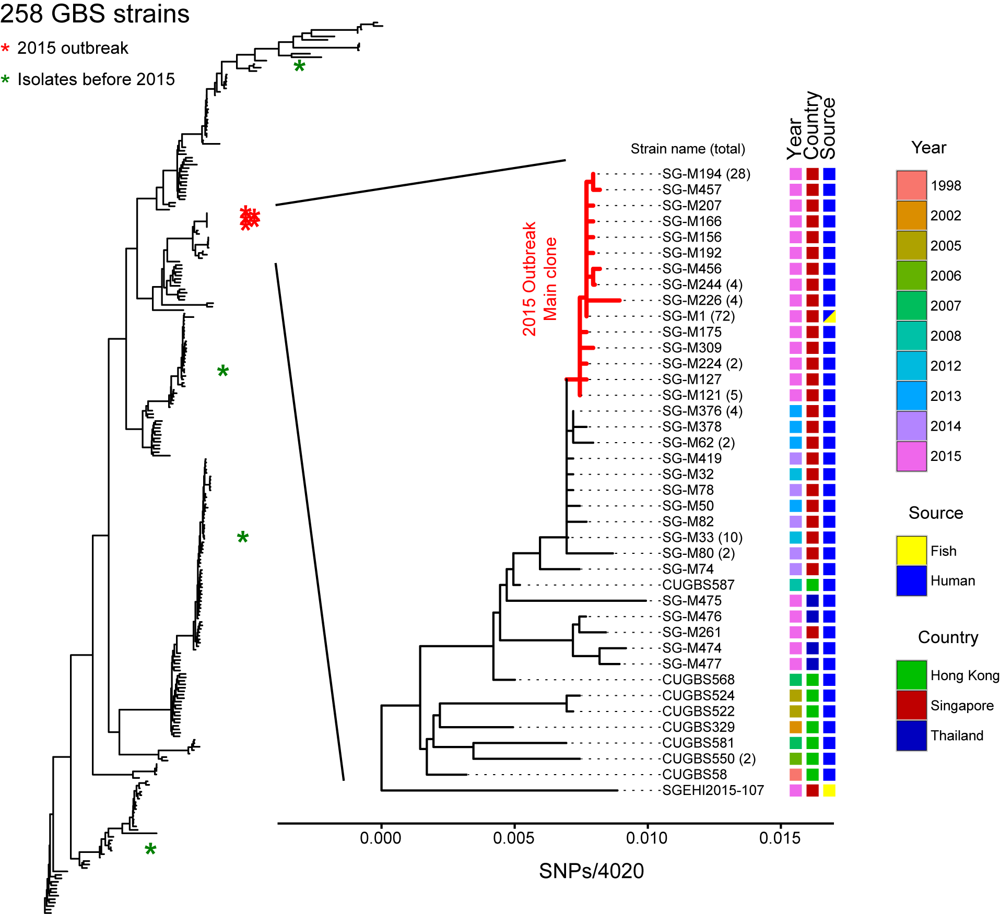

Genomics to Understand UTI
One open problem in the UTI field has been trying to understand intracellular bacteria during infection. The primary clinical problem in treating UTI is that for some patients, UTIs recur frequently, despite sometimes prolonged courses of antibiotic therapy. From studies in a mouse model of UTI, we know that UPEC are able to bind to and invade the bladder epithelial cells during a UTI. While the majority of bacteria during an acute infection are extracellular and present in the urine in the lumen of the bladder (which makes them easy to isolate, monitor, and treat), the subset of intracellular bacteria within the bladder epithelial cells is relatively resistant to antibiotic treatment and host immune defenses. These intracellular bacteria can therefore persist for weeks to months in the bladder (presumably causing no symptoms); upon reactivation, they can cause recurrent UTI. Intracellular bacteria have been visualized in mouse bladders and in mouse and human urine samples (from epithelial cells that have sloughed off into the urine). However, the low numbers of intracellular bacteria (compared with extracellular bacteria during acute UTI), their embedding within the host tissue, and numerical population bottlenecks during their formation has rendered standard genome-wide approaches incapable of providing molecular information on these intracellular bacteria.
To address this knowledge gap, we are applying advances in single cell genomics to understand how UPEC are able to enter and survive in the intracellular niche. Some of our genetic and protein engineering tools are crucial for this work, enabling us to manipulate and visualize clinical strains of UPEC.
Genetic Tools and Synthetic Biology in Clinical Isolates
One key shortcoming in the field of bacterial pathogenesis is the lower quality of genetic tools available for manipulating disease-causing clinical isolates. In particular, negative selection markers that were abundant and efficient for cloning strains of
E. coli in general were not usable in clinical isolates due to lower efficiency or the requirement for strain modification. This hampered the ability to perform clean genetic studies in clinical isolates. Why did existing systems not work well? Of the few that did not require host modification (to generate auxotrophs that could be used for strong selection), most of the systems relied on a serendipitous phenotype of toxicity generated by a gene evolved for some other purpose. For example, the sacB gene was evolved for sucrose metabolism, but in isolation created a toxic product in
E. coli; and the
tetA gene was evolved for tetracycline resistance but also enhanced sensitivity to nickel ions or fusaric acid. We designed a system that utilized toxin genes from toxin-antitoxin systems, reasoning that they were evolved specifically to stop cell growth, and might therefore be more efficient at killing cells. We now had a system that functioned efficiently for negative selection in clinical strains of
E. coli and
Salmonella. In addition, this system also functioned better than any other reported system in cloning strains of
E. coli (excluding those that required special auxotrophic mutations).
The high efficiency of this negative selection system can now be leveraged to enable applications that were previously impractical. We are using this negative selection system to explore the dynamics of chromosomal stability, to perform sexual genetics between unrelated E. coli strains, and to understand mechanisms of plasmid stability.
Analysis of Outbreaks of Bacterial Infections
This project is a relatively standard workflow for analyzing genome sequences of strains isolated from various bacterial outbreaks. All of the analysis is done with clinical collaborators who are providing the strains and medical context for the investigation. The key information that the clinicians are looking for is strain relatedness, which we can provide either from a reference-based analysis (mapping reads to a common reference genome sequence) or a de novo analysis (assembling the reads and comparing the relatedness of the fragmented assemblies). Our pipeline has gone through multiple iterations for analysis of UPEC from pediatric pyelonephritis in Singapore,
Campylobacter jejuni from sheep abortions in the US,
Streptococcus agalactiae from a foodborne outbreak in Singapore,
Streptococcus pyogenes from a single hospital outbreak in Singapore, and vancomycin-resistant Enterococcus from a surveillance study in Singapore.
To mention two highlights from this project, our analysis of the S. agalactiae strains from a 2015 outbreak in Singapore demonstrated a definitive microbiological link between strains causing invasive disease (bacteremia and meningitis) in human patients and strains present on epidemiologically linked raw fish samples (Figure 1 below). This outbreak was the first definitive demonstration that S. agalactiae could be transmitted through consumption of contaminated food. A second major project was a collaboration with a veterinary group studying Campylobacter-mediated abortion in livestock in the US. We helped with genomics analysis of two data sets: a broad sampling of animal isolates and a set of strains derived from an experimental sexual genetics experiment performed in guinea pigs. Our analysis of the first data set helped verify the clonality of the C. jejuni strain causing abortion over a period of 15 years in the US; our analysis of the second data set led to the identification of a single gene that was both necessary and sufficient for C. jejuni to cause abortion in a pregnant guinea pig infection model.
The finding that one gene was responsible for enabling C. jejuni to cause abortion provided a unique opportunity: we could screen genomics techniques, looking for any analyses that, based only on C. jejuni genome sequences, could discover the true abortion-causing gene. We found one analysis, a population genetics statistic referred to as Fu's Fs, that predicted porA as having the highest signal genome-wide for driving population expansion. Furthermore, we learned that elimination of recombination was crucial, and that sequences only from disease-causing isolates (and no background, non-disease causing isolates) were required. The signal in Fu's Fs, according to theory, indicates that porA is conferring a fitness advantage, or is under positive selection, which is driving the population expansion. We now for the first time have a fully computational technique that might provide direct, specific information about why certain bacteria are able to cause disease or how they evolved to be pathogenic. A key advantage of using Fu's Fs is that we only need disease-causing isolates, or those isolates that are sampled from a rapidly expanding (presumably successfully virulent) population. This is precisely the bias that exists in current sequencing projects, enabling us to envision broad testing of this technique on public data sets for a variety of pathogenic bacteria.

Figure 1. The 2015 GBS outbreak in Singapore was a clonal outbreak associated with contaminated fish. The left tree shows that placement of Singaporean invasive GBS isolates within the context of 258 publicly available GBS strains showed sporadic cases (green asterisks) prior to 2015 but tight clustering (red asterisks) during the outbreak. The inset on the right shows the high relatedness of the 2015 outbreak strains (>80% less than 1 SNP apart; red branches). In addition, one fish GBS strain was identical to the major human clone (SG-M1).